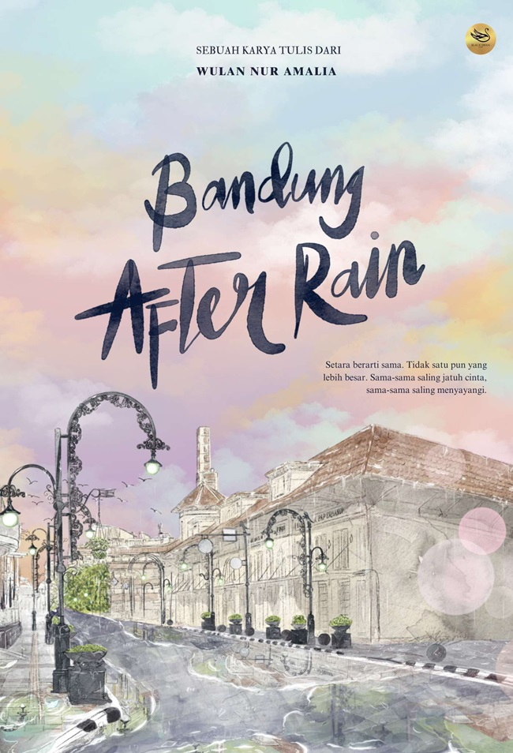

Sinopsis Novel
mengisahkan perjalanan cinta yang penuh dinamika antara dua tokoh utama, Hema dan Rania. Setelah hampir tujuh tahun
menjalin hubungan, mereka akhirnya harus berpisah karena sikap Hema yang semakin acuh terhadap Rania.
Penulis: Wulan Nur Amalia
Tahun Terbit: September 2024
Hema menunjukkan sikap acuh yang membuat Rania merasa tidak dihargai, meskipun sebenarnya ia hanya mengharapkan
perhatian dan komunikasi yang lebih baik. Namun, kebosanan yang dirasakan Hema membuatnya mengambil keputusan untuk
mengakhiri hubungan mereka, sebuah keputusan yang kemudian ia sesali.
Setelah putus, Rania mencoba bangkit dan fokus pada kehidupannya sendiri. Dia memilih untuk mengejar pendidikannya,
menyibukkan diri dengan tugas akhir, penelitian, serta persiapan sidang skripsi.
Rania berusaha menyembuhkan luka hatinya dengan mencurahkan energi pada pencapaian akademis dan karier masa depannya.
Sementara itu, Hema yang merasa bersalah mulai menyadari kesalahannya dan merasakan penyesalan yang mendalam.
Namun, kesempatan untuk memperbaiki semuanya tampak semakin jauh karena Rania sudah mencoba melupakan masa lalunya dan
melangkah maju. Di tengah proses pemulihan hati Rania, muncul sosok Jeano, sahabat Hema yang telah lama menyimpan
perasaan khusus terhadap Rania.
Meski mencintai Rania, Jeano tidak ingin egois dan tidak memaksakan perasaannya. Ia hanya ingin melihat Rania bahagia,
dan jika kebahagiaan itu ada pada Hema, ia bersedia membantu Rania untuk menemukan kebahagiaannya kembali.
Sikap Jeano ini menunjukkan perasaan cinta yang tulus dan tak mengharapkan balasan, memberikan warna baru dalam
kehidupan Rania dan memperlihatkan sisi lain dari cinta yang tidak selalu harus memiliki. Bandung After Rain berfokus
pada sisi emosional dari perjalanan cinta dan bagaimana masing-masing tokoh mengatasi luka dan penyesalan.
Penulis menghadirkan Bandung sebagai latar yang memperkuat suasana cerita, dengan suasana kota yang tenang setelah hujan
menjadi simbol dari perasaan sedih sekaligus harapan bagi para tokoh. Bandung dalam cerita ini tidak hanya sekadar latar
tempat, tetapi juga seolah menjadi saksi bisu dari perasaan dan perubahan yang dialami Hema, Rania, dan Jeano.
Kelebihan Novel Bandung After Rain
Salah satu keunggulan utama dari Bandung After Rain adalah pendalaman karakter yang baik. Penulis berhasil membangun
tokoh-tokohnya dengan sifat-sifat yang realistis dan dapat membuat pembaca merasa dekat.
Hema, Rania, dan Jeano dihadirkan dengan kelemahan dan kekuatan yang membuat mereka tampak manusiawi. Setiap emosi yang
mereka rasakan digambarkan dengan sangat detail, sehingga pembaca dapat merasakan penderitaan, penyesalan, hingga
ketulusan cinta yang mereka alami.
Setting kota Bandung yang digambarkan secara mendalam juga menambah kekuatan cerita. Bandung digambarkan dengan suasana
khas setelah hujan, yang menghadirkan kesan romantis sekaligus bentuk depresi.
Deskripsi tentang tempat-tempat ikonik di Bandung, seperti kafe-kafe kecil, jalanan yang basah, dan udara yang segar
semakin memperkaya latar cerita dan memberikan nuansa yang mendalam bagi pembaca.
Selain itu, alur cerita yang mengalir dengan baik membuat pembaca terus ingin tahu bagaimana nasib ketiga tokoh utama
ini. Konflik internal yang mereka hadapi terasa nyata dan relevan dengan pengalaman banyak orang dalam hubungan asmara.
Penulis juga berhasil menyisipkan pesan-pesan tentang pentingnya komunikasi, pengertian, dan ketulusan dalam hubungan
cinta.
Kekurangan Novel Bandung After Rain
Meskipun Bandung After Rain memiliki banyak kelebihan, terdapat beberapa kekurangan yang perlu dicatat. Salah satunya adalah
pacing cerita yang terkadang terasa lambat, terutama di bagian-bagian tertentu yang lebih fokus pada monolog internal
tokoh. Hal ini mungkin membuat beberapa pembaca merasa kurang terlibat atau kehilangan minat.
Selain itu, beberapa plot twist terasa agak dipaksakan, terutama ketika Jeano muncul sebagai sosok yang
menyelamatkan Rania. Meskipun niatnya baik, kehadiran Jeano terkadang terasa seperti solusi instan untuk konflik
yang ada, yang bisa mengurangi kedalaman cerita.
Kesimpulan
Secara keseluruhan, Bandung After Rain adalah novel yang berhasil menyentuh emosi pembaca dengan karakter yang kuat
dan latar yang mendukung. Meskipun terdapat beberapa kekurangan, seperti pacing yang lambat dan plot twist yang
terasa dipaksakan, namun pesan yang disampaikan melalui cerita ini tetap relevan dan menggugah.
Bagi pembaca yang menyukai cerita cinta dengan konflik emosional yang mendalam, Bandung After Rain adalah pilihan
yang tepat. Novel ini tidak hanya menghibur, tetapi juga memberikan refleksi tentang pentingnya komunikasi dan
ketulusan dalam hubungan asmara.